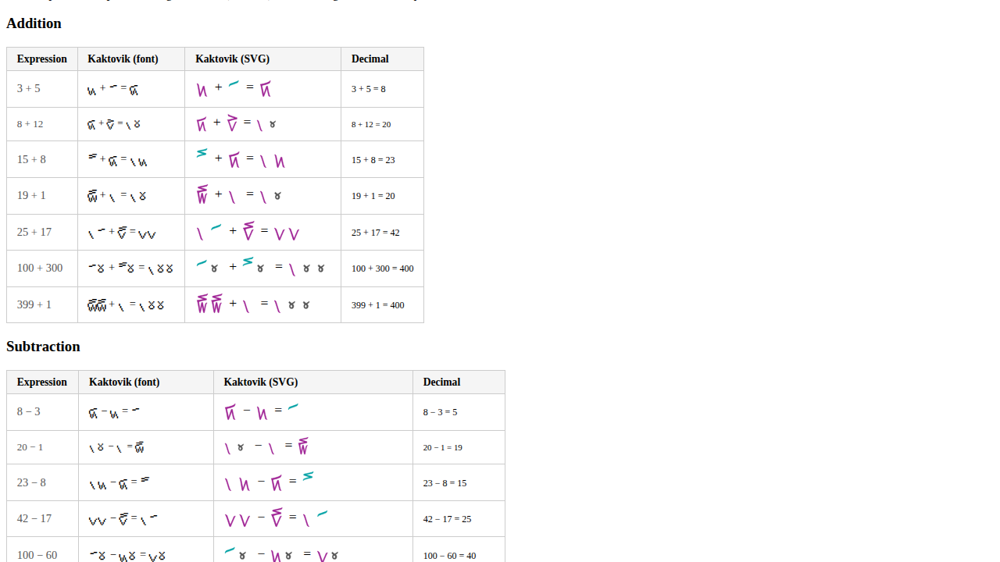
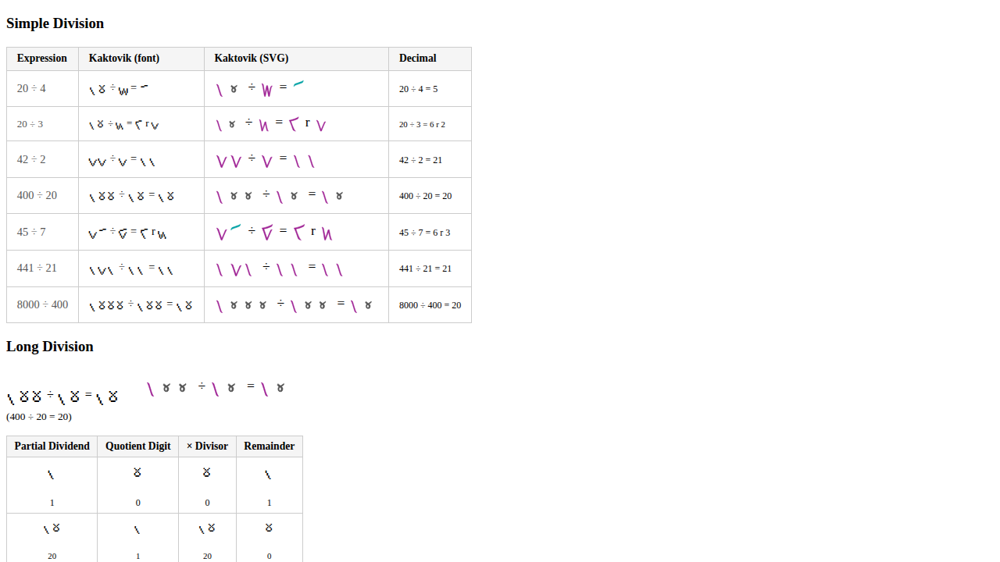
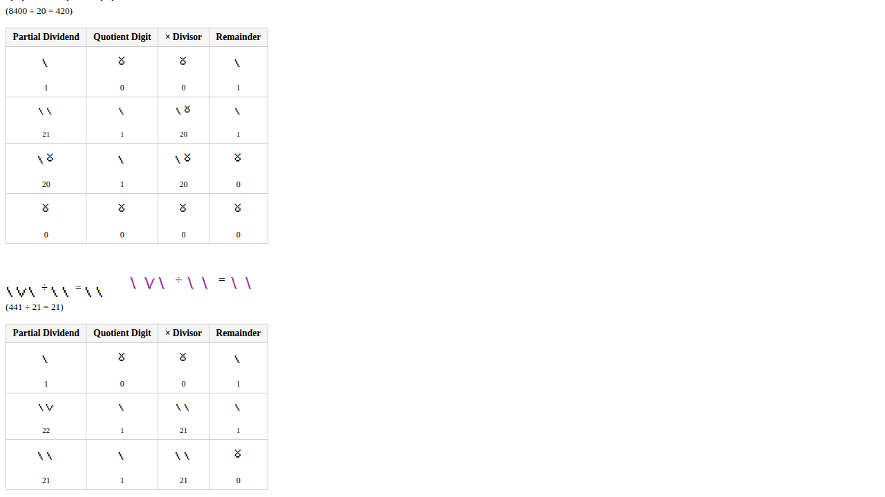
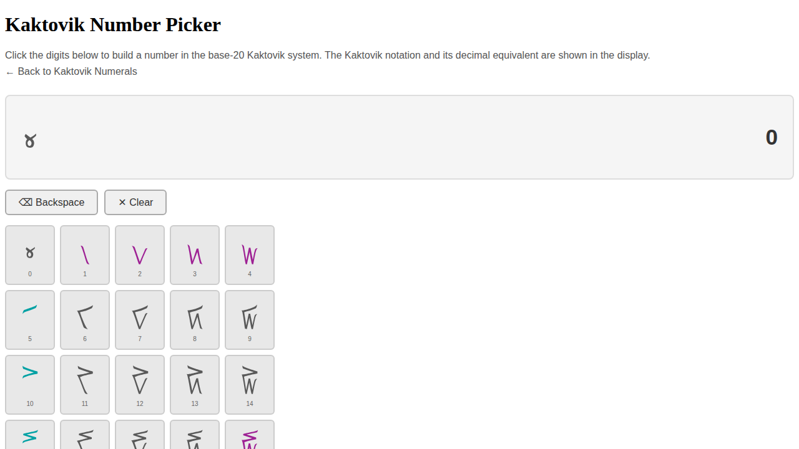
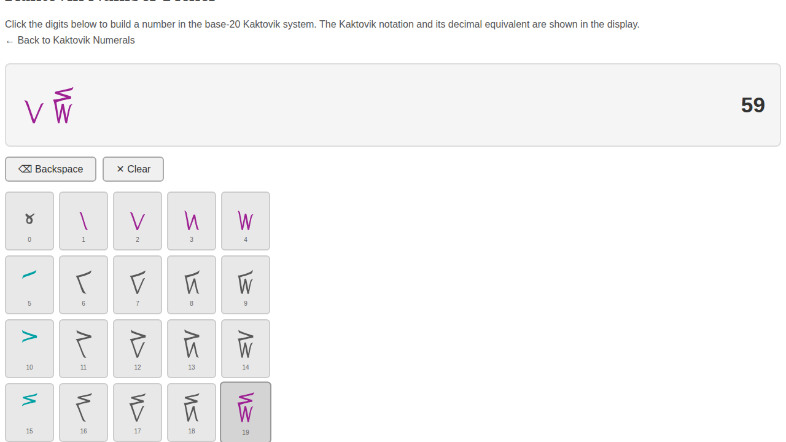

In a previous post about Kaktovik Numerals/KN SVG I started a site to show the numbers in this system.
I used GitHub Copilot to build the calculations:
Addition, Subtraction, Simple Division, Long Division
New: src/js/kaktovik.js
Pure arithmetic module with full input validation:
numberToKaktovik(n)/kaktovikToNumber(s)— decimal ↔ Kaktovik (U+1D2C0–U+1D2D3)add(a, b),subtract(a, b)— validated non-negative integer opsdivide(a, b)→{ quotient, remainder }longDivide(a, b)→{ quotient, remainder, steps[] }— step-by-step base-20 workings per digit
longDivide(8400, 20)
// { quotient: 420, remainder: 0, steps: [
// { partialDividend: 1, quotientDigit: 0, product: 0, remainder: 1 },
// { partialDividend: 21, quotientDigit: 1, product: 20, remainder: 1 },
// { partialDividend: 20, quotientDigit: 1, product: 20, remainder: 0 },
// { partialDividend: 0, quotientDigit: 0, product: 0, remainder: 0 }
// ]}
Updated: src/index.html
- Arithmetic calculator: Four panels (addition, subtraction, simple division, long division). Each shows decimal inputs, the result as Kaktovik glyphs (via existing Unifont-Upper font), and a decimal reference. Long division additionally renders the per-step table. All four panels are auto-run on page load so results are immediately visible.
- Examples section: A new section below the calculator with pre-computed examples for each operation:
- Addition, Subtraction, Simple Division: a table of 7 examples each, with columns for the expression, the Kaktovik font rendering, a colored SVG rendering, and the decimal equivalent.
- Long Division: 4 worked examples (400÷20, 8400÷20, 441÷21, 399÷19), each with the full step-by-step base-20 breakdown table and a colored SVG expression header.
- Colored SVG rendering: Each digit is rendered from the existing per-digit SVG files with a two-tone color scheme matching the reference visual — teal (
#00a1a4) for pure multiples of 5 (digits 5, 10, 15) and purple (#9e2194) for all unit-bearing digits — using asyncfetchSVGText/numberToColoredSVG/renderSVGCellshelpers.



Updated: src/css/styles.css
Styles for .kaktovik (large glyph display), .arithmetic flex layout, .operation-group cards, .long-division step table, .examples-table / .ldiv-example for the Examples section, and .svg-kak / .svg-expr / .svg-op / .ldiv-header / .ldiv-svg for the colored SVG column.
I then asked
Use the following image alongside the existing code base to build an interactive number picker using the SVGs and match the colours
Adds a new picker.html page that lets users build arbitrary base-20 numbers by clicking Kaktovik digit buttons, displaying the result in both Kaktovik SVG notation and decimal.
New files
src/picker.html— Picker page: 4×5 digit grid, Kaktovik display, decimal readout, Backspace/Clear controls; fully accessible (aria-live,role="group",aria-label)src/js/picker.js— Fetches all 20 SVG digit files in parallel, builds clean inline SVGs with per-digit colouring, handles base-20 digit accumulation and leading-zero suppression
Modified files
src/css/styles.css— Grid layout, rounded cells with hover/active states, display area and control button stylessrc/index.html— Link to the picker from the main page
Colour mapping (matches reference)
| Digits | Colour |
|---|---|
| 0 | #595959 |
| 1–4 | #9e2194 purple |
| 5, 10, 15 | #00a1a4 cyan |
| 6–9, 11–14, 16–18 | #595959 |
| 19 (= 15+4, max digit) | #9e2194 purple |
Screenshots
Initial state — full digit grid with correct colouring:

After selecting digits 2 and 19 → decimal 59:

I still need to review this but it's got me started for sure.